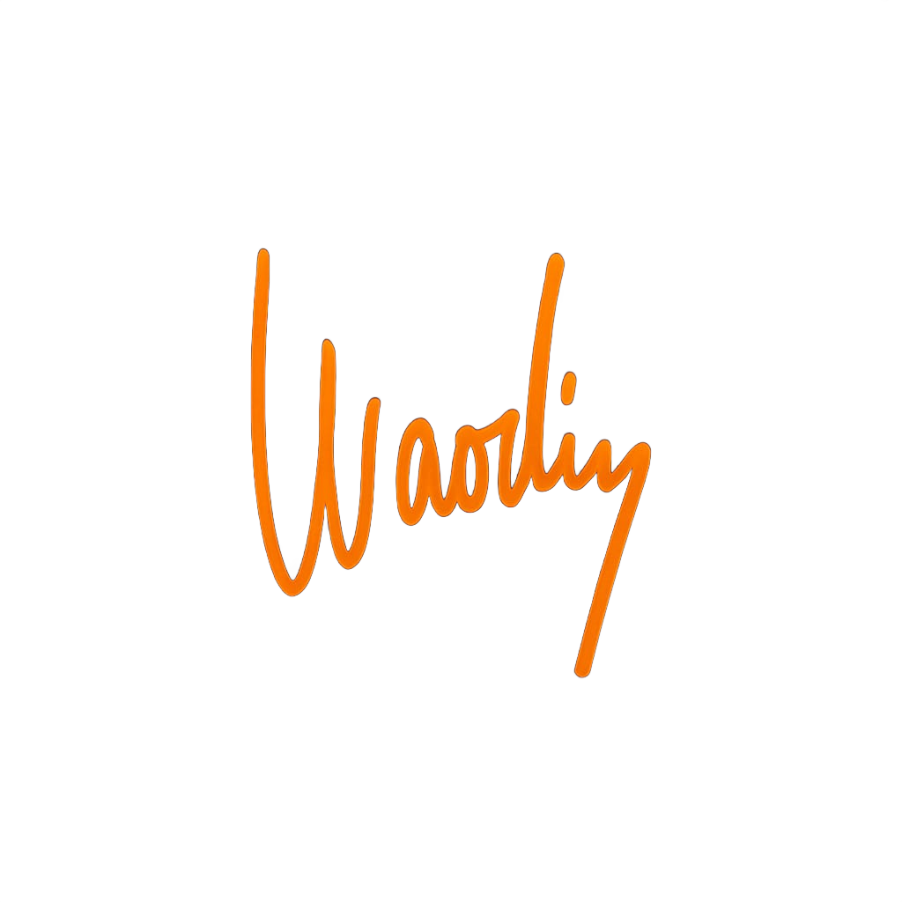

Digitální půst
Offline jako síla

Vypnul jsem mobil. Ne ztišit, ne letadlo, prostě úplně vypnout. Černá obrazovka, konec signálu, žádná berlička, žádný „jenom rychle mrknu“. Ten zvyk držím v neděli. Sobota večer, tlačítko podržet, šuplík zavřít. Žádné kompromisy, protože kompromis je první prasklina, kterou se dovnitř protlačí všechno, co mě vyžírá. A pokaždé, když to udělám, cítím směs strachu a úlevy. Strach, že mi něco uteče. Úlevu, že konečně nic pro změnu utíkat nebude. Ani já.
Ráno bez displeje
Ráno bývá nejdrsnější. Ruka si pořád hledá kapsu, hlava si chce odškrtnout první dávku cukru pro mozek. Kafe bez podcastu najednou chutná jinak. Tichá kuchyň. Voda syčí, pára stoupá, lžička cinká o porcelán. Dřív to bylo kulisové – všechno se dělo zároveň, nic naplno. Teď to je soustředěné, hutné, skoro slavnostní. Všimnu si, že hrnek hřeje jinak, když mezitím neprojíždím feed. Ty malé detaily jsou k smíchu, dokud ti nedojde, že přesně tyhle drobnosti skládají den do pocitu „žiju“.
Ven bez sluchátek
Pak vyjdu ven. Bez sluchátek, bez mapy, bez plánu. Dovolím si jít jen tak, bez kontroly kilometrů a převýšení. Když nejsem napojený, svět vstoupí blíž. Krok křupe ve štěrku, vzduch je ostřejší, po ránu často voní kouřem z krbů, někde štěká pes, tramvaj si cinkne a do toho mi tělem proběhne ten zvláštní klid, který znáš jen z míst, kam nepadají notifikace. Les, řeka, stará ulice, hřbitov s kovanou brankou – všechno, co je, je najednou víc přítomné, protože tomu nepřekáží obrazovka mezi námi.
Nuda jako test
Nuda přijde vždycky. Je to signál, že se mozek rozhlíží po staré droze. Dřív jsem jí utíkal, dneska si ji nechávám sednout naproti jako nechtěného hosta. „Tak ahoj, co teď?“ A ono nic. Pět minut nic. Deset minut nic. A pak se začne otevírat prostor. Vzpomenu si na jméno člověka, se kterým jsem si chtěl už měsíc zavolat. Vystoupí emoce, kterou jsem zametl. Jasně, nuda může bolet, protože v ní nemáš kam utéct. Ale právě v ní se rodí věci, které nejsou kopie. To, co je tvoje.
Psát rukou
Nosím s sebou malý sešit a obyčejnou propisku. Ta kombinace dělá z myšlenek realitu. Psaní rukou zpomalí hlavu, donutí mě být přesnější. Napíšu tři řádky a zjišťuju, že to, co jsem si v týdnu omlouval, je jen vymlácený zvyk. Napíšu pět řádků a vytáhnu z podvědomí věci, o kterých jsem „nevěděl“. Ne že bych je neznal – jen jsem na ně neměl ticho. Papír je statečný kamarád, unese ošklivou pravdu, o kterou se nechci podělit na sociální síti. A já se po tom pravdivém odlehčení narovnám o centimetr.
Odpoledne s tělem
Offline den není póza. Není to nová identita, na kterou bych chtěl chytat lajky. Je to spíš návrat k tomu, co bylo předtím samozřejmé: k rytmu, který nenařizuje cizí plánovač, ale tělo. Hlad říká, že je čas jíst. Únava říká, že je čas odpočívat. Ne „ještě jeden díl a jdu spát“. Ne „ještě pět minut a jdu pracovat“. Dýchám, chodím, dělám obyčejné věci. Opravím knoflík, který mě týden štval. Umyju okno, přes které jsem se poslední měsíc mračil. Uklidím šuplík s kabely. Vypadá to směšně, ale je to terapie rukama. V hlavě se čistí místo tím, že v rukách mizí chaos.
Vztahy se v tomhle režimu chovají jinak. Když s někým sedím, tak s ním fakt sedím. Neexistuje „sekunda, jen to zvednu“. Neexistuje „pošlu to hned“. Zůstává pohled, slovo, pauza mezi větami, ticho, ve kterém slyšíš, co ten druhý říká mezi řádky. Lidi cítí celou tvoji pozornost, protože nikam neodtéká. Někdo tě pochválí, že jsi „dneska nějaký v klidu“. Při tom jsi jen přítomný. Není to zázrak, je to vedlejší efekt hranic.
Práce si myslí, že má nárok na všechny naše dny. V neděli ji nechávám stát za dveřmi. Ne proto, že by nebyla důležitá, ale proto, že já jsem důležitější. V pondělí se mi ten čas vrátí. Líp vybírám, co je fakt potřeba. Míň reaguju a víc rozhoduju. Šum, co by mě jindy odklonil do slepé uličky, nemá šanci. Ten rozdíl je skoro směšně měřitelný – udělám polovinu úkolů a mám pocit, že jsem udělal dvakrát víc. Pevný střed místo roztříštěnosti. Jeden tah za druhým, bez cukání.
Nejčastější výmluva zní „co když mě někdo bude potřebovat“. Když jde o život, lidi si cestu najdou. Když nejde, máloco je tak urgentní, aby to nevydrželo den. Naopak – učíš své okolí, že i ty máš hranice. Že neodpovíš okamžitě na všechno. Když to děláš pravidelně, svět se přizpůsobí. Přestane ti házet háčky pětkrát denně. Naučí se, že pondělí je čas, kdy přijdeš s čistou hlavou a uděláš to, co je třeba. Tvůj klid se stane záchytným bodem i pro ně.
Večer bez světla
Tělo si o offline říká samo. Ten zvláštní hrb v zádech, bolavé oči, zadržený dech, cukání prstů. Když vypnu, rovná se páteř, jako by si uvědomila, že k tomu nepotřebuje židli za dvacet tisíc. Dýchám do břicha. Chodím delší kroky. Ruce bez telefonu jsou najednou volné a zbytečně nepíchají do prázdna. Večer se usíná jako po koupeli. Ticho před spánkem je jiný druh hudby. Místo rychlých střihů posledních stories ti v hlavě doznívá pomalý den.
Často si do toho dne vkládám úplně všední obrazy, které si jindy neudržím. Trh dopoledne, pán s novinami a dřevěnou holí, který se na mě bez důvodu usměje. Park, kde stará paní trénuje pomalou chůzi, jeden krok vteřina, druhý krok vteřina, strážce času je sama sobě. Všechno je to tak obyčejné, až to má váhu. A mně pokaždé dojde, že od reality jsem nikdy nebyl tak blízko jako ve dnech, kdy nejsem online.
Když se ozve starý reflex „vyfoť to“, nechám ho projít, jako se nechává projít škytavka. Projde, odejde. Zůstane obraz bez důkazu, co platí jen pro mě. Je v tom zvláštní útěcha: nemusím nic zachraňovat do cloudu, abych to opravdu zažil. Čím míň ukládám, tím víc si pamatuju. Paměť, když ji nenecháš venčit algoritmy, je silnější, než si myslíš.
Přijdou i drsnější věci. Když utichne internet, ozvou se nedodělané věty: měl jsem zavolat mámě, slíbil jsem si, že už nebudu tohle jíst, že s tím přestanu, že začnu běhat, že zvednu telefon tomu kamarádovi, co to teď nemá jednoduché. Ve dnech bez úniku se už tolik nevymluvím. Udělám aspoň jednu věc. Ne všechny. Jednu. Třeba zavolám. Třeba se omluvím. Třeba uklidím roh pokoje, který odkládám roky. Třeba si sednu a dvacet minut dýchám jako blbec, co přišel na to, že dýchat se dá i vědomě. Ta jedna věc se pak chytí druhé. Den bez digitálu je jiskra, co zapálí obyčejnou kontinuitu.
Odpoledne občas přijde krize. Automat by rád věděl, co se děje ve světě. Někdo někde napsal chytrou větu, někdo jiný udělal fotku, kterou bych rád okopíroval. A já si vždycky připomenu, jaký efekt má to instantní „vědění“. Vyruší mě, rozežere pozornost, přestanu vnímat vlastní dech a klasicky skončím s prázdnýma rukama. V ten moment si udělám čaj, sednu na zem, opřu se o zeď. Jsou to tři minuty směšně jednoduché rezistence. A za tři minuty je po všem.
Síla hranic a návrat k sobě
Večer je rituál. Žádná modrá záře. Kniha místo feedu. Ne dvacet článků, ale dvě kapitoly, co mám v ruce. Ticho před spánkem je jako čistá hladina vody. Když usínám, hlava neřve „ještě něco, ještě něco“, ale pomalu se ukládá do tmy. Ráno mám pocit, že jsem spal, ne jen zavřel oči. To, co jsem kdysi zapomněl, se vrací jako samozřejmost: spánek opravuje. Ne když ho kradu obrazovce, ale když ho vážně dám sám sobě.
Někdy se mě někdo ptá, jestli jsem v neděli šťastný. Ne, nehoním se za štěstím jako za výsledkem. Ten den není o euforii. Je o klidu. O tom, že nejsem roztříštěný. O tom, že si stojím za hranicí, kterou jsem si určil. Potřebuju si umět říct: teď ne. Svět může chvíli běžet beze mě. A já můžu chvíli běžet bez něj. Ta dovednost se mi pak přenese i do zbytku týdne. V úterý řeknu „zavolám později“ a zavolám později. Ve čtvrtek si nechám telefon na stole a poslouchám člověka naproti. V pátek si vybírám jedno důležité „ano“ místo deseti malých „jo, proč ne“.
Jasně, občas to poseru. Stane se, že v neděli hrábnu po mobilu a vím přesně proč: únava, strach, prázdno. V tu chvíli si nedám facku. Vypnu znovu. Všechno je to praxe, ne soud. Digitální půst není závod o medaili. Je to dlouhodobé vybojovávání prostoru. Jedna neděle nic nevyřeší, ale sto nedělí ti přeprogramuje mozek.
Co to dělá s identitou? Hodně. Bez publika zjistíš, kým jsi, když nehraješ. Bez publika si všimneš, že ti stačí být dobrý sám pro sebe. Bez publika se přestaneš srovnávat s cizíma highlightama. Je to blbé i osvobozující. Míň pozlátka, víc pravdy. A s tou pravdou se pak dělá líp cokoliv: dřina, odpočinek, tvorba, rozhovor, láska, samota.
Na konci neděle se občas přistihnu, že se mi nechce zapnout. Je to zvláštní. Zvyk je mrcha a klid taky. Sedím nad telefonem, koukám na něj jako na neznámou věc. Zapnu ho pomalu. Notifikace se nahrnou jako hejno hladových ryb. A já si vyberu jednu. Zbytek nechám do rána. Zjišťuju, že svět nikam neutekl. Jen zase běží. A já jsem se na start postavil o milimetr pevnější.
Neděle offline je moje malá vzpoura proti neustálé dostupnosti. Je to jednoduchá, ale sakra pevná zpráva sám sobě: patřím si. Ne jako věc, kterou si svět rozebere podle potřeby, ale jako člověk, co si umí své dny navrhnout. Ta zpráva se nečte nahlas, neukládá se do stories. Žije se. V kuchyni, v lese, na procházce, v sešitě, v očích člověka naproti.
A pokud tě zajímá, jestli se dá bez telefonu ten den přežít: dá. Nechybí ti nic, co za něco stojí. Chybí ti jen rituál zvuku, co sis zvykl milovat. Ten rituál si můžeš dát jindy. Neděle je na něco jiného. Na návrat. Na ticho, které tě nenudí, ale naplní. Na bolest, kterou už nebudeš tlumit. Na smích, co není pro kameru. Na obyčejné žití bez publika. Na to, abys sám sobě přestal lhát, že „to máš pod kontrolou“, když ruka sama jezdí po displeji jako myš na oprátce.
Tak si to zkus taky. Ne jako challenge, co vyžaduje potlesk. Jako malou laskavost. Vypni v sobotu. V neděli žij. Neuděláš rekord, ale možná konečně uděláš místo. Pro sebe. A v pondělí, až se rozsvítí svět, se do něj vrátíš o stupínek pevnější, ostřejší, klidnější. Ne abys byl dokonalý. Ale abys byl celý. A to je víc než dokonalost, kterou na tebe cpe obrazovka celý týden.
